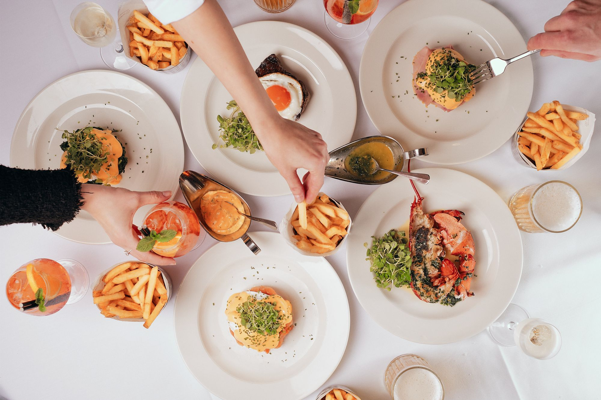
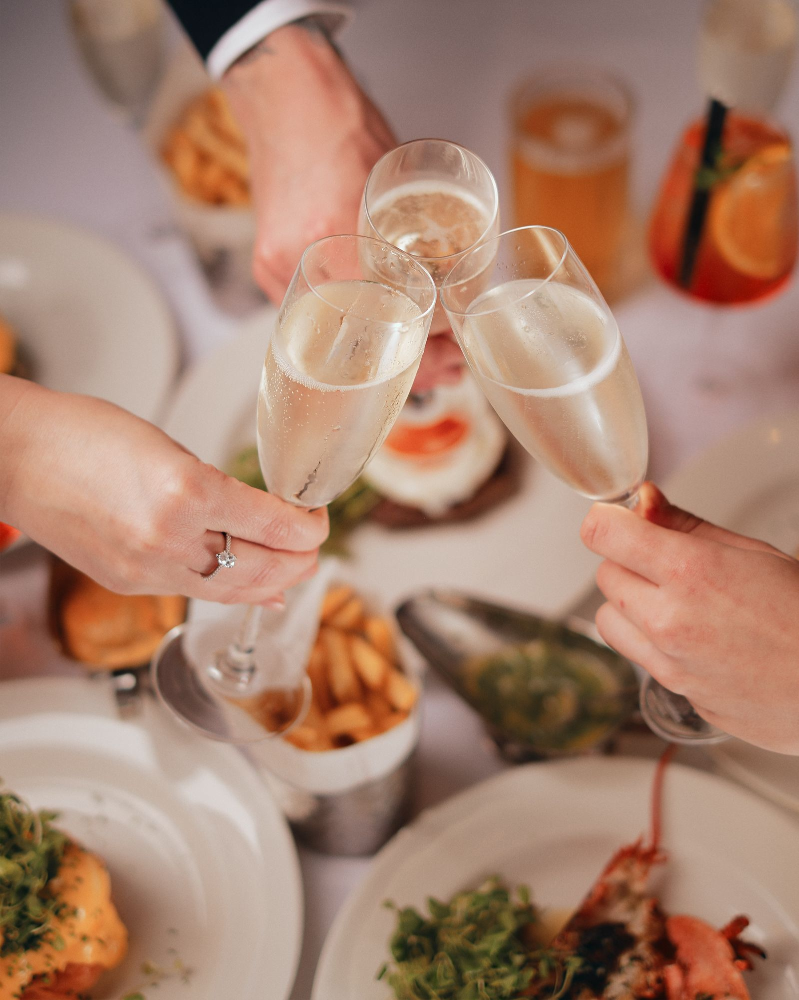

Every Saturday
Bottomless Brunch
Bubbles, steak & lobster beneath the glass dome. The Square Mile is quiet; the dining room is not.
Saturdays at Lombard
Make your Saturdays unforgettable
Our signature Bubbles, Steak & Lobster Bottomless Brunch, with a live DJ playing feel-good classics all afternoon.
- Free-flowing drinks Bubbles, beer & Aperol Spritz
- Seasonal sharing spread To start
- Steak, lobster roll or eggs Your main
- Two sittings 12pm–2pm · 3.30pm–5.30pm


A word from our chef
“We focus on the quality and backstory of our ingredients just as much as how we cook them.”
James Holden, Head ChefDevon blue lobster, Isle of Wight tomatoes, English mozzarella from La Latteria and Peter Hannan's aged steak topped with a Happy Egg Co. egg. Brunch, sourced from across the British Isles.
What people say
The best boozy bottomless brunch spot in LondonBig Bloc
The best luxury brunch in LondonSquareMeal
I'd much rather appreciate the food, atmosphere and cocktailsLauren Brown, The Hungry Explorer
Good to know
Questions, answered
How much is bottomless brunch at 1 Lombard Street?
Saturday bottomless brunch is £75 per person, including bottomless bubbles, rosé, Aperol Spritz and lager, a seasonal sharing spread and a main.
What times is bottomless brunch?
There are two sittings every Saturday: 12pm to 2pm and 3.30pm to 5.30pm.
Where is the bottomless brunch?
In the Brasserie beneath the glass cupola at 1 Lombard Street, London EC3V 9AA, directly opposite Bank station.
Saturday's sorted
Two sittings every Saturday. A discretionary 15% service charge applies.